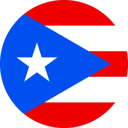

Sebastián Maldonado


My name is Sebastián Maldoando, and I was born and raised on the island of Puerto Rico. Currently I'm a sophmore Computer Science and Engineering student at the Universiy of Puerto Rico of Mayagüez. In this page you will be able to find a virutal portfolio containing different details about me. This webpage was developed as part of participating in Google's Software Product Sprint Spring 2021.
I was born in May of '01 in the town of Arecibo, but lived most of my life in Hatillo. For two years I lived in Corozal, and for almost 4 years now I have lived in the northern town of Manatí. I enjoy eating; I love trying new foods and getting to know cultures through their gastronmic delights. That being said, I truly believe that my island has one of the best varieties of meals and plates! One of my passions is to take pictures of the sky. I feel the sky is so underrated, so I try to capture it's magic as best as I can. Personally, it's the night sky that has the most beauty to it; a gateway to the universe. So, I could say I do "photogrpahy" for fun with my handy smartphone camera (click the image for more).
In Augsut of 2019, I began my bachelor of science in the Universiy of Puerto Rico at Mayagüez. I enrolled in the Faculty of Engineering, in the Department of Computer Science and Engineering. I ventured into the world of CS without any previous experience or even basiv knowledge about its topics. Yet, I have found a great passion for it. I enjoy how there are many ways do solve a single problem, and all the logic and math behind it! I see Computer Science as a way of living, it opens up new ways of thinking. My campus, UPRM, has provided me with great tools, like diverse classes and extense curriculums, that have taught me and develop even further my programming and math skills.
Thanks to my time in college, I have achieved or participated in the following:
- Participated in Google events, such as a virtual coding challenge and Google SPS Spring 2021.
- Form part of RUMarino, a team that develops an AUV for RoboSub competitions.
- Taken technical courses such as OOP and Data Structres, both in Java.
- Formed part of the College of Engineering Honor Roll of 2019-2020.
Click here to see content created by server code.
Click here to get a random message: